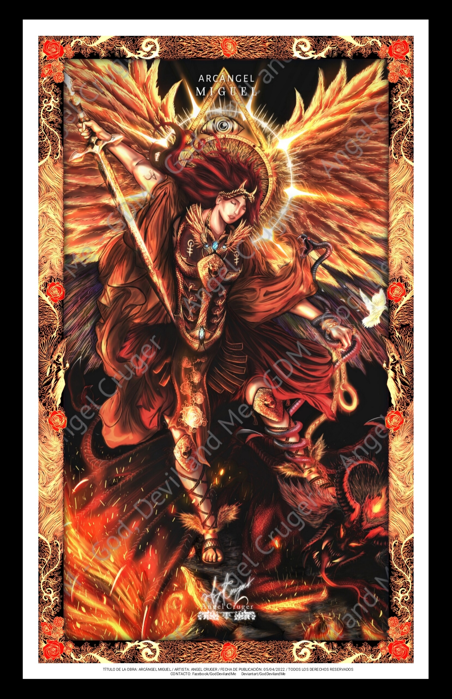
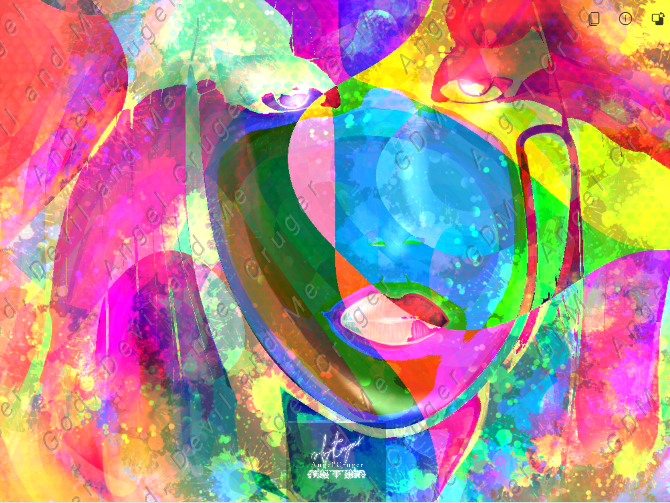
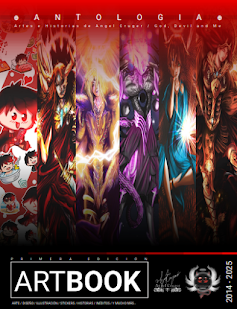
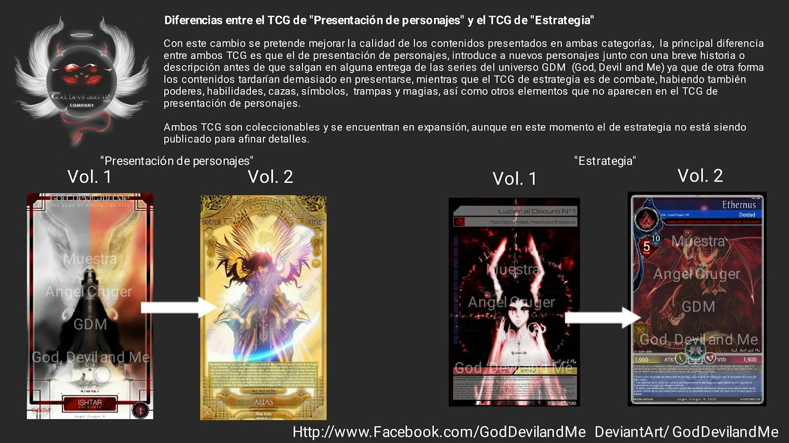
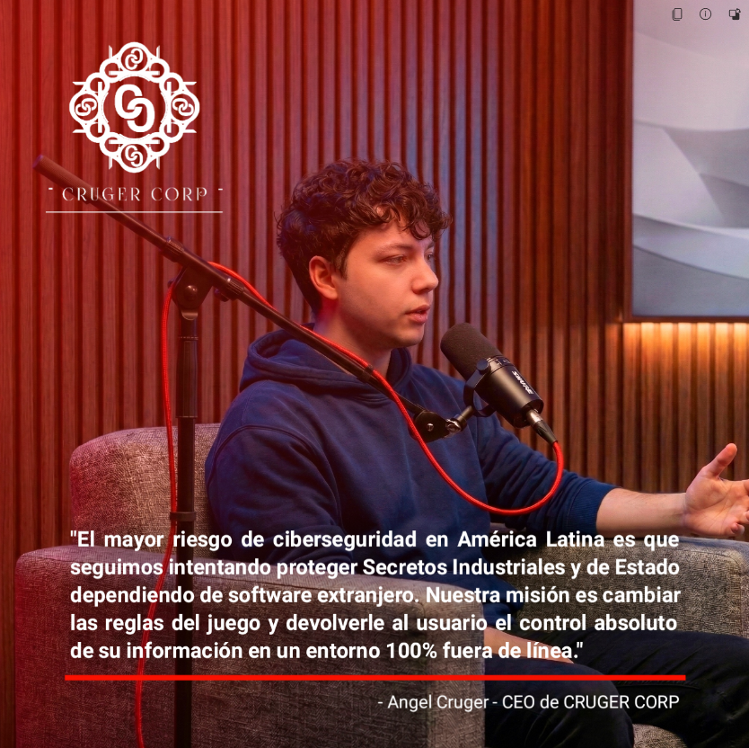

Angel Cruger, es un artista conceptual, ilustrador digital y creador de contenido mexicano, fundador de la plataforma de divulgación Angel Curiosidades (anteriormente EDC EL DATO CURIOSO).
Con una trayectoria que inició en 2015, Cruger se ha destacado por la creación de contenido informativo, el diseño de personajes y la consolidación de una comunidad orgánica de decenas de miles de seguidores. Su carrera combina el arte y la comunicación en internet con estudios avanzados en ciencia de datos e ingeniería de sistemas a últimas fechas ya que se ha destapado un perfil que sorprendió a muchos.
Angel es ilustrador con una sólida carrera en diversas plataformas creativas, eso ayudó a formalizar el concepto en comunidades creativas en grupos de Facebook y en plataformas. Posee un estilo narrativo muy agudo, profundizando en temas sobre introspectiva, la mente y la conciencia llevado a sus obras como Ryker, Arthelion, El guardián secreto o AURO, una de las obras que más estuvo presente en grupos mientras compartía su progreso (antes de que se perdiera durante un evento que él mencionó como un hackeo).
Su creatividad lo llevó a formar una vasta comunidad donde comparte con sus seguidores a los que se les denomina ¨CURIOSOS¨. Esta comunidad actualmente a la fecha Dic-25 ronda los 32,000 seguidores. Cruger ha participado en eventos públicos como La Primera Jornada Académica de Educación, Arte y Diversidad (organizada por el IMAC).
Paginas oficiales:
SUMARIO
- 1. Historia y Orígenes
- 2. Crecimiento y la "Guerra Digital"
- 3. Identidad visual y Rainbow Red
- 4. Evolución a Angel Curiosidades (2025)
- 5. Faceta Artística
- 6. Historias y Universo creativo
- 7. Faceta científica: El salto a la Ciberseguridad
- 8. Vida personal
- 9. Campañas de apoyo a través de la Fundación DWS
- 10. Noticias y Publicaciones
- 11. Referencias académicas / Zenodo
- 12. Referencias y búsquedas Google
Historia y Orígenes
El proyecto principal de Cruger nació en 2015 bajo el nombre EDC El Dato Curioso. En una época donde las redes sociales se llenaban de páginas de entretenimiento con información inconsistente o falsa (como la popular página "¿Sabías qué?"), Angel decidió fundar un espacio dedicado a compartir datos reales, verificados y estructurados. Durante sus primeros años, el creador también experimentó con otros formatos, fundando en 2016 Rigathz, una revista digital independiente enfocada en el periodismo y la cobertura de eventos de la comunidad gamer y otaku.
Crecimiento y la "Guerra Digital"

Hacia 2019, la plataforma comenzó a definir su estilo propio y a profesionalizar su contenido. Durante este periodo, EDC entró en una competencia orgánica por la audiencia contra páginas gigantes de Facebook. Como respuesta, Cruger desarrolló formatos característicos, algunas de las páginas a las que se enfrentaron durante las primeras ¨guerras digitales¨ comenzaron a implementar formatos como la serie "100 datos que no sabías de", a manera de respuesta por el auge de captar más seguidores y visitas en redes sociales sobre todo en Facebook (cuando la plataforma no monetizaba a creativos) lo que impulsó la página a alcanzar sus primeros 10,000 seguidores con un formato característico y muy completo que algunos catalogaron de ¨demasiada información¨ pero que no te quedaba duda de que sabía la respuesta y que había investigación detrás, a finales de ese mismo año.

Las secciones de la pagina suelen incluir temas diversos, entre ellos, comparte noticias importantes, misterio, temas tecnológicos, pero una de las secciones que mas le han gustado a sus seguidores suelen ser aquellas que narran viajes o anécdotas sobre mundos antiguos, por ello la imagen que acompaña este punto es la de ARABÍA una de las publicaciones que mas le gustaron a los usuarios de facebook. Angel suele compartir solo con comunidades de facebook, aunque en varias ocasiones ha intentado conectar con nuevas audiencias siempre regresa o mantiene mas activa la comunidad de facebook donde tiene grupos de paginas con miles de seguidores, uno de ellos relacionado directamente con Angel Curiosidades.

El proyecto se forjó a través de pausas forzadas y adversidades significativas, incluyendo el robo total de su equipo de trabajo en 2019 y un ciberataque masivo a finales de 2022 que destruyó sus unidades de almacenamiento principales. A pesar de esto, durante la pandemia de 2020 y 2021, la plataforma experimentó su mayor auge al compartir notas verificadas sobre salud y actualidad, logrando picos de audiencia que superaron los 2 millones de personas alcanzadas de forma orgánica. La página enfrentó diversos periodos e incluso llegó a perder una parte de sus seguidores por incluir temas para agradar a una mayor audiencia como MEMES, chistes ocasionales, frases célebres, más variedad en temas como novedades, tecnologías, tendencias, actualidad, naturaleza, etc.
Identidad visual y Rainbow Red

El universo de Angel Curiosidades se distingue fuertemente por su apartado visual, operado bajo el sello de su propia casa productora, ONESTUDIO MULTIMEDIA. El corazón visual de la marca es su mascota oficial: Rainbow Red. Este personaje ilustrado de estilo "Chibi", caracterizado por su cabello rojo, ropa oscura y ojos de estrella, es el embajador del proyecto y protagoniza reacciones, plantillas y material didáctico. El origen de "Red" se remonta a animaciones cuadro por cuadro creadas por Angel entre 2014 y 2016 para una micro serie titulada "Banco Guazteca", donde el personaje era conocido inicialmente como "Angel Chibi". Tras múltiples rediseños, el personaje adoptó su forma definitiva como el rostro de la marca.
Evolución a Angel Curiosidades (2025)
En 2025, el proyecto abandonó el nombre "EDC El Dato Curioso" para evolucionar formalmente a Angel Curiosidades. Este cambio de marca buscó evitar confusiones con festivales de música electrónica y reflejar una identidad mucho más personal y directa con su creador. Actualmente, la comunidad principal supera los 30,000 seguidores y ha diversificado su contenido bajo el eslogan "Mucho más que ver...", incluyendo infografías, humor, recomendaciones de videojuegos y cápsulas audiovisuales. Además de Facebook, el proyecto mantiene archivo y presencia en plataformas como Blogger, TikTok, Instagram y YouTube.
Actualmente no mantiene mucha interacción con su comunidad, salvo por actualizaciones esporádicas, se llegaron a publicar promociones sobre apoyo a otros canales o ¨servicios profesionales de consultoría de redes sociales¨ que se ocuparon rápido y no se volvió a abrir nuevas fechas. Se sabe que varias paginas en diferentes plataformas de creadores emergentes surgieron por el apoyo o mentoría de Angel, algo que suele comentar ocasionalmente y que ha llegado a aparecer en comentarios dentro de publicaciones, sin embargo no se tiene una lista exacta con nombres.
Faceta Artística

Cuenta con muchas publicaciones sobre ilustración digital y artes, así como historias con narrativa profunda. Angel suele comentar activamente en sus plataformas principalmente en Facebook sobre algunos proyectos creativos en los que trabaja, sin embargo, muchos critican la falta de transparencia sobre la continuidad de los proyectos o las versiones de muestra que solo aparecen por poco tiempo publicadas. Angel suele ser muy cauteloso con eso, una de sus más recientes incursiones fue el cuento corto publicado según compañeros de facultad en la UNRC (Universidad Nacional Rosario Castellanos) sobre una historia de un robot que termina en un mundo antiguo y que muchos lo consideran una armadura embrujada, esta historia se fue puliendo hasta convertirse en un guion formal que se presentó como Las Crónicas de Arthelion, sin embargo, pese a existir información sobre la historia o sobre un capítulo cero, no se ha continuado con su publicación.
Esto molesta a sus seguidores quienes quieren contenidos continuos, Angel suele mantener un perfil bajo en cuanto a serializaciones, lo mismo ocurrió con Ryker entre dos mundos, El guardián secreto, El veneno más hermoso, la mini serie sobre su propia caricatura RED RAINBOW (mascota de Angel Curiosidades en estilo chibi) aunque se ha mencionado trabajar en un ArtBook recopilatorio para compensar a sus fans.

Cuenta con muchas ilustraciones entre las que destaca Arcángel Miguel sometiendo al Diablo, una pieza ilustrativa que refleja su faceta de evolución a través de los años ya que es una reinterpretación de una versión presentada en 2017. Su estilo Gótico y de Fantasía oscura lo lleva a acumular una comunidad de seguidores que buscan historias fuera de lo convencional. Una de las que más se publicó en redes sociales fue Auro aunque no se concluyó y contaba con muchos errores de edición, este trabajo ayudó a consolidarlo como artista y narrador de historias con profundidad en los personajes.
Historias y Universo creativo
Las historias de Angel suelen tener un trasfondo filosófico fuerte, y se caracterizan por ser fantasía oscura y temas futuristas. Dentro de las historias que ha desarrollado en su UNIVERSO GDM (God, Devil and Me seudónimo que suele usar en su faceta creativa aunque ha optado por firmar sus obras después simplemente como Angel Cruger y sigue siendo el nombre de su página en Facebook sobre temas de ilustración y proyectos artísticos):
- Auro en sus diferentes versiones (Títulos como Untold, Legends, The last Aurian´s).
- The Secret Guardian. (Rebautizado como El guardián secreto, Las crónicas de Allius).
- Ryker entre dos mundos.
- Las Crónicas de Arthelion.
Cuenta con ilustraciones seriadas sobre diferentes colecciones, así como versos y cuentos cortos que terminaron siendo otras historias, como El veneno más hermoso o Arlift Adees In the Hell (rebautizado como El infierno de Arlifth una historia muy oscura sobre el hermano de Auro y como una narrativa de una pequeña tropa ligada al ex-príncipe de las legiones de SABDOM marcada por traición termina siendo un cuento fascinante y crudo sobre la guerra). Esta última historia cambió muchas veces sus cuadros hasta centrarse en los personajes secundarios, es a través de un escrito en tercera persona como se lee la historia.
Final End´s Un mundo en Guerra es una historia sobre la colección de ilustraciones de Ángeles Legendarios. Narra el principio de una de las batallas más detalladas de su colección, y el principio de uno de los seres más enigmáticos de sus series de cartas ZERITH. La historia es corta y se sabe que entró en una edición y curación de datos para incluirlo en el ARTBOOK que el Autor mencionó estar trabajando.

ARTBOOK: Esta colección detalla según la propia página de God, Devil and Me un avance de preservación y un intento por recuperar datos de historias perdidos, continuarlos o cerrarlos de manera digna. Incluye por lo que se ha mencionado, ilustraciones inéditas, avances de nuevos proyectos, historias como El veneno más hermoso o Mi encuentro con la Bestia e incluso se menciona una de las más esperadas por los seguidores UNREAL´S una historia futurista y Cyberpunk, cuya trama indica tratarse de la próxima generación de androides conocidos como los UNREAL´S o SINTIENTES, creados por la CORPORACIÓN sin embargo despertarían la bajeza de la humanidad y estarían al borde de la extinción, sin derechos que los protejan un grupo de rebeldes luchan en las sombras contra la CORPORACIÓN ya que se cree que experimentan con humanos, uno de sus experimentos ha escapado y ahora se encuentra oculto en la megalópolis de INFINITY CITY.

FINAL END´S TCG: Angel trabajó hace varios años el concepto de un juego de cartas y se sabe que existen imágenes referentes a diferentes partes del juego con mecánicas de combate, aunque después simplemente se simplificaron a mostrar las ilustraciones más recientes a manera de cartas TCG muy detalladas.
Faceta científica: El salto a la Ciberseguridad

La rigurosidad adquirida durante años de investigación documental y capacitación teórica/practica llevó a Angel Cruger a profundizar académicamente en las ciencias exactas. Acumulando más de 100 certificaciones, cinco diplomados en áreas como Inteligencia de Negocios y Big Data, y una Especialidad Operativa en Tratamiento de Datos, su perfil creativo evolucionó hacia la ingeniería de sistemas. Este conocimiento técnico derivó en la fundación de Cruger Corp, una firma tecnológica donde Angel aplica sus metodologías de investigación en el diseño de arquitecturas algorítmicas y protocolos de defensa militar, como el Dark Zone Titanium. Esta faceta cierra el círculo de su perfil polímata, uniendo la comunicación visual con la ciberseguridad, y llevándolo a publicar investigaciones formales en repositorios de ciencia abierta.
Según su página de Curiosidades en Facebook donde comenzó a compartir temas de sus proyectos actuales sobre Movail, PMS y su nueva empresa Cruger Corp. En la página de Cruger Corp se puede encontrar la información sobre EL FUNDADOR en donde se detallan aspectos clave en la información de esta sección.
Vida personal
Actualmente ha pasado a temas más serios sobre tecnologías y desarrollos que estuvo realizando durante años de fondo y en paralelo a su faceta como creativo aunque daba indicios sobre desarrollo y temas técnicos, tomó por sorpresa a su comunidad sobre el salto a temas más serios. Se le suele encasillar como un INFLUENCER sin embargo su faceta es más la de un divulgador de conocimiento ya que no busca exponer su vida en general, es muy reservado en cuanto a su vida privada, no se le conoce pareja o situación sentimental aunque se le llegó a relacionar con una figura conocida en el medio artístico esto no se logró confirmar (se dice que circularon fotografías que terminaron por desmentirse lo cual aumentó la curiosidad de los seguidores de su página).
Angel mantiene alejada a la gente de su vida privada, centrando toda comunicación solamente en sus proyectos. Actualmente responde a través de plataformas oficiales o comunicados de medios (terceros).
Campañas de apoyo a través de la Fundación DWS

Angel Cruger mantiene una modesta fundación de apoyo ocasional llamada Dreams With Soul (Sueños con Alma) autofinanciada, la cual opera de manera autónoma, la ultima campaña concluyo de manera oficial el 26 de Diciembre de 2025 la Fundación DWS anuncio junto a Angel Curiosidades en la pagina oficial AC el cierre de la ultima campaña (más reciente) sobre apoyo de donación de equipos médicos (dispositivos médicos que no requieren permisos o receta medica) los cuales eran Nebulizadores portátiles y Aparatos auditivos (solo dispositivos). La campaña buscaba apoyar de manera directa a personas que los necesitaran, ya sea adultos mayores o niños y adolescentes.
Noticias y Publicaciones
- Angel participó en La Primera Jornada Académica de Educación, Arte y Diversidad (organizada por el IMAC).
- Ha sido invitado a colaborar en espacios creativos como invitado en videojuegos INDIE aunque él mismo ha asegurado negarse por el contenido explícito de algunos proyectos o que no se alinea con su visión creativa.
- En 2020 fue invitado a colaborar en la Revista de publicación digital en Chile SAPO, en su versión GRAPH No. 1 aparece mencionado en la página 05, 53 y 98. Enlace: https://www.calameo.com/books/005361577f7961e749de1
- Participó en la integración de la expo INFLUENCERS de 2022 pero no hay información del lugar o fotografías.
- Así como en repositorios artísticos como ArtStation o DevianArt (aunque él ha mencionado en dichas páginas que no muestran sus trabajos más actualizados que suele compartir en sus perfiles sociales, principalmente en Facebook a través de su alter ego God, Devil and Me).
- Cuenta con publicaciones en repositorios formales como Zenodo y ORCID sobre su faceta como comunicador y divulgador.
Referencias Académicas / Zenodo
- LA DICTADURA DE LA LUZ: Implicaciones Neurobiológicas, Económicas y Psicosociales de la Transición a la Iluminación de Espectro Frío. https://doi.org/10.5281/zenodo.18066101
- IMPLEMENTACIÓN DE ALGORITMOS COMBINATORIOS DE ALTA EFICIENCIA EN ENTORNOS DE CÓMPUTO NO CONVENCIONALES SOBRE PLATAFORMAS PROPIETARIAS: De la Soberanía Geoespacial (Movail) a la Cognición Sintética (OSSAI). https://doi.org/10.5281/zenodo.18107678
- Estudio de implementación MOVAIL - Reducción de complejidad algorítmica de probabilística a determinista (Actualización v.2.0 / 2025). https://doi.org/10.5281/zenodo.18107678
- Metodología de Inteligencia Vol. I: Vulnerabilidades Sistémicas y un Nuevo Paradigma de la Soberanía Digital basada en Hardware. https://doi.org/10.5281/zenodo.18415821
Referencias y búsquedas Google